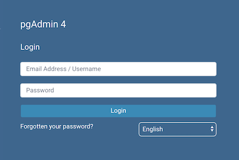
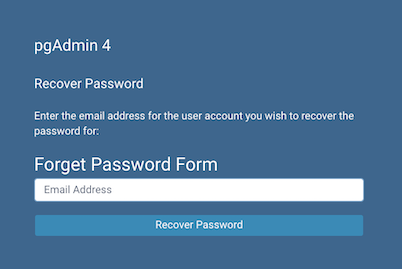

Login Dialog¶
Use the Login dialog to log in to pgAdmin:
Use the fields in the Login dialog to authenticate your connection. There are two ways to authenticate your connection:
From pgAdmin version 4.21 onwards, support for LDAP authentication has been added. If LDAP authentication has been enabled for your pgAdmin application, you can use your LDAP credentials to log in to pgAdmin:
Provide the LDAP username in the Email Address/Username field.
Provide your LDAP password in the Password field.
Alternatively, you can use the following information to log in to pgAdmin:
Provide the email address associated with your account in the Email Address/Username field.
Provide your password in the Password field.
Click the Login button to securely log into pgAdmin.
Please note that if the pgAdmin server is restarted, then you will be logged out. You need to re-login to continue.
Recovering a Lost Password¶
If you cannot supply your password, click the Forgotten your password? button to launch a password recovery utility.
Provide the email address associated with your account in the Email Address field.
Click the Recover Password button to initiate recovery. An email, with directions on how to reset a password, will be sent to the address entered in the Email Address field.
If you have forgotten the email associated with your account, please contact your administrator.
Please note that your LDAP password cannot be recovered using this dialog. If you enter your LDAP username in the Email Address/Username field, and then enter your email to recover your password, an error message will be displayed asking you to contact the LDAP administrator to recover your LDAP password.
Avoiding a bruteforce attack¶
You have the possibility to lock an account by setting MAX_LOGIN_ATTEMPTS
once it has reached the maximum number of login attempts.
You can disable this feature by setting the value to zero.